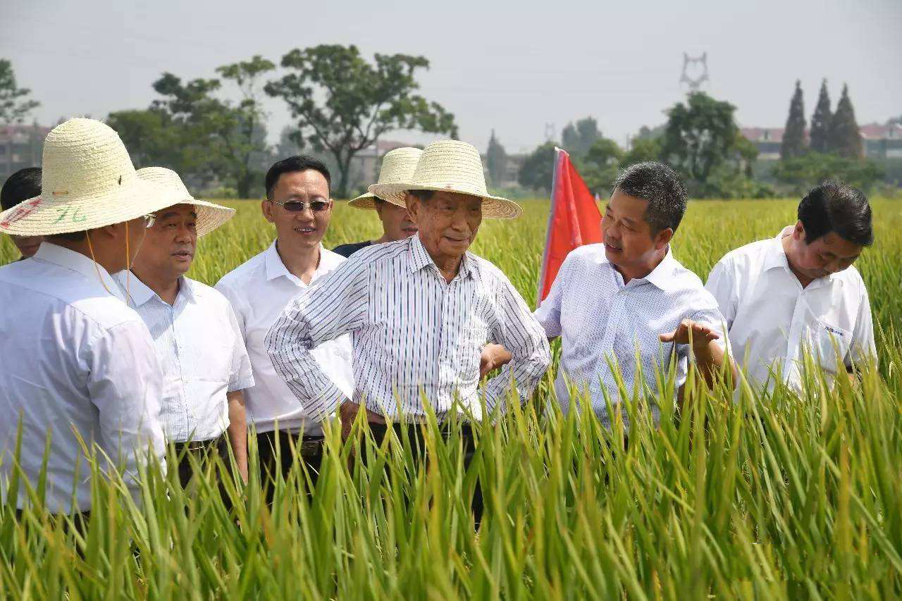

袁隆平（右三）在农田里看最新培育的试种水稻——这是他一生扎根水稻培育的一部分
- 1930年9月7日 - 袁隆平出生于北京协和医院
- 1949.08—1953.08 - 西南农学院农学系农作物专业学习
- 1950年11月至1953年7月 - 院系调整，并入重庆新建的西南农学院农学系，续读3年至毕业
- 1953.08—1971.01 - 湖南省安江农业学校教员
- 1960年7月 - 他在农校试验田中意外发现一株特殊性状的水稻。他利用该株水稻试种，发现其子代有不同性质。因为水稻是自花授粉的，不会出现性状分离，所以他推论该为天然杂交水稻。随后他把雌雄同蕊的水稻雄花人工去除，授以另一个品种的花粉，尝试产生杂交品种。
- 1961年春天 - 他把这株变异株的种子播到创业试验田里，结果证明了1960年发现的那个“鹤立鸡群”的植株，是“天然杂交稻”。他当时是一个安江民校的教师，但面对当时严重饥荒，他立志用农业科学技术击败饥饿威胁，从事水稻雄性不育试验。
- 1964年7月5日 - 他在试验稻田中找到一株“天然雄性不育株”，经人工授粉，结出了数百粒第一代雄性不育株种子。
- 1965年7月 - 袁隆平又在14000多个稻穗中逐穗检查到6株不育株，并在此后两年播种中，共有4株成功繁殖了1～2代。其研究彻底推翻由传统经典理论米丘林、李森科的“无性杂交”学说，并推论水稻亦有杂交优势。通过培育雄性不育系、雄性不育保持系和雄性不育恢复系的三系法途径来培育杂交水稻，可以大幅度提高水稻产量。
- 1964年2月22日 - 与农技干部邓则结婚.
- 1964年到1965年 - 两年的水稻开花季节里，他与科研小组在稻田进行杂交育种试验。后在稻田里找到了6株天然雄性不育的植株。经过两个春秋的观察试验，对水稻雄性不育材料有了较丰富的认识，根据所积累的科学数据，在大学毕业工作12年左右的他，发表在1966年第17卷第4期《科学通报》上。
- 1966年2月28日 - 发表第一篇论文《水稻的雄性不孕性》，刊登在中国科学院主编的《科学通报》半月刊第17卷第4期上。5月，国家科委九局局长赵石英同志，获悉袁隆平发表的《水稻的雄性不孕性》一文后，引起高度重视，以科委九局名义致函湖南省科委与安江农校，支持袁隆平的水稻雄性不育研究活动，指出这项研究的意义重大，如果成功，将使水稻大幅度增产。 [18] 6月，文化大革命开始，袁隆平遭受冲击，水稻雄性不育试验被迫中断。
- 1970年夏 - 袁隆平从云南引进野生稻，拟在靖县（安江农校又搬迁到了靖县）做杂交，后因没有进行短光照处理而未成功。秋季，袁隆平带领科研小组李必湖、尹华奇来到海南岛崖县南江农场进行三季水稻实验条件良好的海南，进行研究试验，向该场技术员与工人调查野生稻分布情况
- 1973年 - 协作组通过测交找到了恢复系，攻克了“三系”配套难关。10月，袁隆平在苏州召开的水稻科研会议上发表了《利用“野败”选育三系的进展》的论文，正式宣告中国籼型杂交水稻"三系"已经配套。
- 1977年 -袁隆平发表了《杂交水稻培育的实践和理论》与《杂交水稻制种与高产的关键技术》两篇重要论文。
- 2017年9月 - 在2017年国家水稻新品种与新技术展示现场观摩会上，袁隆平宣布一项剔除水稻中重金属镉的新成果："近期我们在水稻育种上有了一个突破性技术，可以把亲本中的含镉或者吸镉的基因'敲掉'，亲本干净了，种子自然就干净了。"
人物经历:
"'杂交水稻之父'袁隆平及其团队培育的超级杂交稻品种'湘两优900（超优千号）'又创亩产纪录，经第三方专家测产，该品种的水稻在试验田内亩产1149.02公斤。"